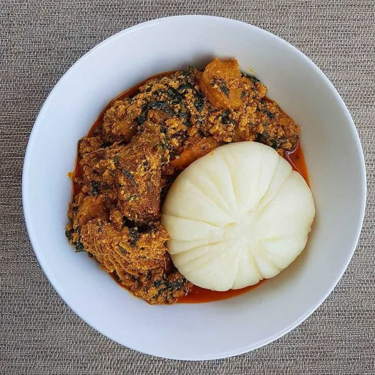

Swallow and Egusi Soup is a traditional Nigerian dish served with rich and flavorful egusi soup. The soup is made with ground melon seeds, vegetables, spices and assorted meat or fish.
It is a filling Nigerian meal that is suitable for lunch or dinner.
| Specification | Details |
|---|---|
| Food Name | Swallow and Egusi Soup |
| Category | Nigerian Food |
| Main Ingredients | Swallow, egusi, vegetables, meat or fish |
| Serving Size | 1 plate |
| Price | N5,000 |